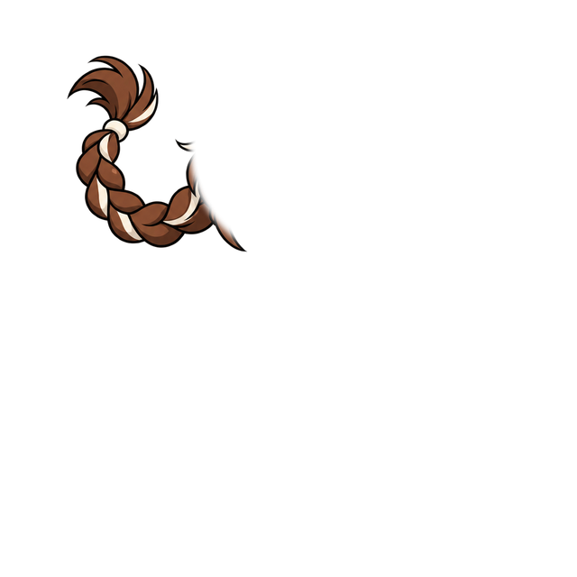
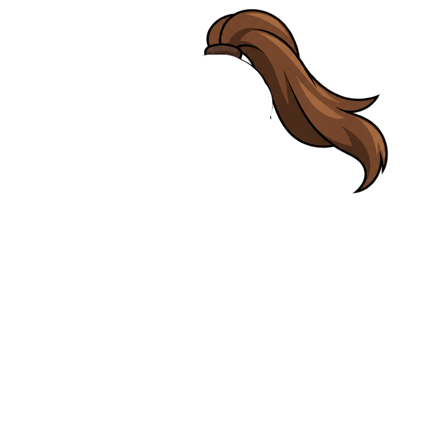

Asset library.
Everything Ah & Jump draws with. Two images, one drawn rope, a palette, and the rules behind the voice input.
Download kit (zip) ↓ Play the game ↗ GitHub ↗ TikTok Effect Figma ↗Character
Three outfits on one template, the player's own face on top. A random one is picked every round.

1254 × 1254, transparent. Pink cropped jacket and wide blue jeans. The face is cropped live from the camera and drawn at the neck, 142 px tall on an 840 px canvas, with a 16 px cream outline (#fffdf2).

Orange tee and purple skirt. Same neck position; rope handles sit a little closer in, so the rope anchors per body.

White jacket over red shorts with hi-tops. Legs split at the hips in code for the running pose.
Drawn in code: a blurred disc with a white line smiley, meaning "your face goes here".
Same disc with crossed eyes on a faceplant.
Hair
Two hairstyles on the same head template, drawn behind the face. Each is split into a still cap and swinging parts that pivot where they leave the head. A spring driven by the jump's vertical speed swings them: rising pulls them down, falling flings them up. All pieces share one 640 px frame, so they stack without offsets.
{kind=link}
{kind=link}

Swings from the left ear, pivot (425, 370) in the 1254 px source. Up to 0.32 rad up and 0.6 rad down, hangs a little at rest.
{kind=link}
{kind=link}
{kind=link}
{kind=link}

Swings from the crown, pivot (600, 110), on the same spring, a little softer.
{kind=link}
Guide
A white line-art character saying “ah”, on a light frosted scrim over the court after the selfie. It loops above “Say “ah” to start”; one short sound starts a 3-2-1 count-in. The same line style guides all four games.
{kind=link}
Background
Vertical court, drawn behind the canvas.

941 × 1672. Green court, blue sky, tree shadows. Ground line sits 60 px above the canvas bottom.
Rope
Not an image. Three strokes on canvas, drawn every frame.
Outline #263c47 7 px · body #ee9cd2 4.8 px · highlight #ffd9f2 1.2 px. On a fall the body turns #ff777d. Fall extras: four spinning stars in #ffe052 and a "BONK!" in Impact italic 55 px.
Palette
Used by the UI, confetti and rope.
background
yellow · CTA, stars
coral · confetti
purple · confetti
cream · cards, outline
teal · confetti
pink · rope
ink · text
Rules & voice
How a sound becomes a jump.
| Round | 15 seconds. One short "ah", one jump. Stay on your feet to win. |
|---|---|
| Voice input | Volume-onset detection, not speech recognition. Any short sound works. Threshold auto-calibrates from the room's noise floor, clamped between 0.004 and 0.08. |
| Timing | Rearms after 130 ms of quiet. At least 250 ms between two jumps. |
| Poses | Four jump poses (tuck, twist, squash, spin), picked at random, never the same twice in a row. Height and airtime stay the same. |
| Sound | Jump, land, countdown, go, fall and win are synthesized with WebAudio. The result stingers are shared with the salon game: ending-great.mp3 on a win, ending-bad.mp3 on a faceplant. |
| Music | Synthesized bed at 126 bpm, four bars of F / C / Dm / Bb: soft kick, hats, clap, bouncy bass and plucked stabs. Runs from the countdown to the result, fades on a fall. Kept quiet (9% with the mic, 16% in practice) so it sits under the voice instead of over it. |
| Face capture | MediaPipe Face Landmarker, on device. The face oval is clipped from the selfie once, then reused as a sprite. |
| Flow | Camera and mic card → automatic selfie → guide on a frosted scrim → one “ah” starts a 3-2-1 → 15 s → “Congrats” or “You lose” with a Replay button. Replay goes back to the guide. |
| Tap practice | No camera or mic. Tap to jump, line-smiley placeholder face. |